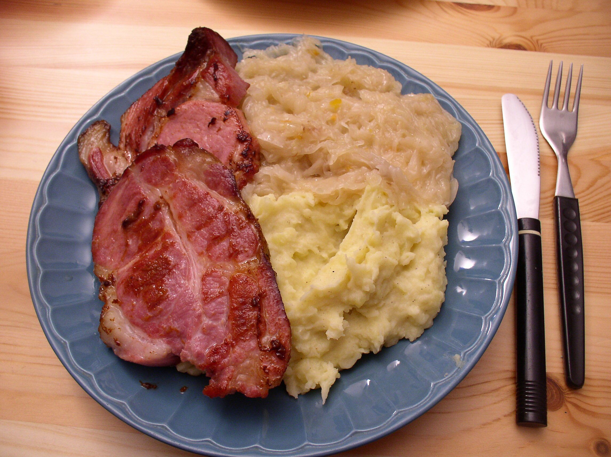

Home
Kassler Recipe

Description
It's a salted and slightly smoked cut of pork, usually loin or neck. Often there's a bone, but this can be removed if desired before cooking.
Ingredients
- 4 smoked pork chops (Kassler)
- oil and/or butter to fry
Steps
- Heat oil and/or butter, about 2 tablespoons in a fry pan.
- Over medium heat, lightly brown Kasseler chops on both sides.
- Serve and enjoy. Great with German mustard, potatoes, and vegetables.